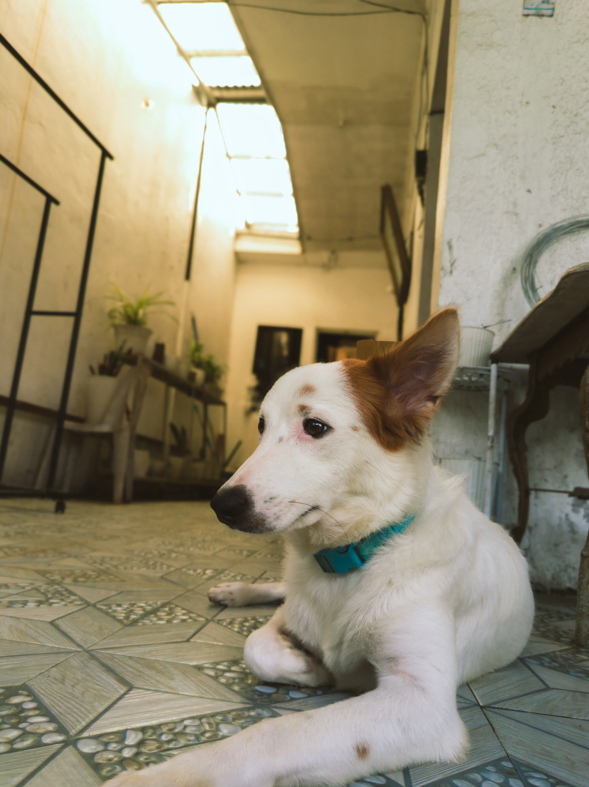
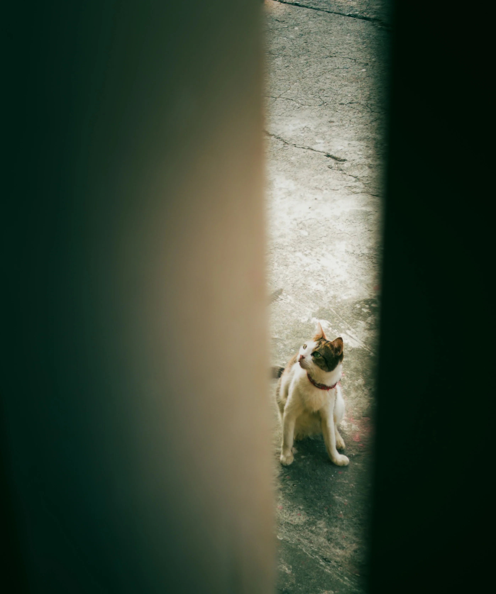
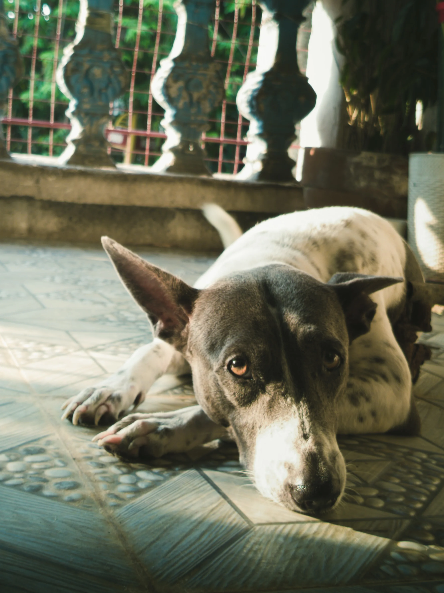
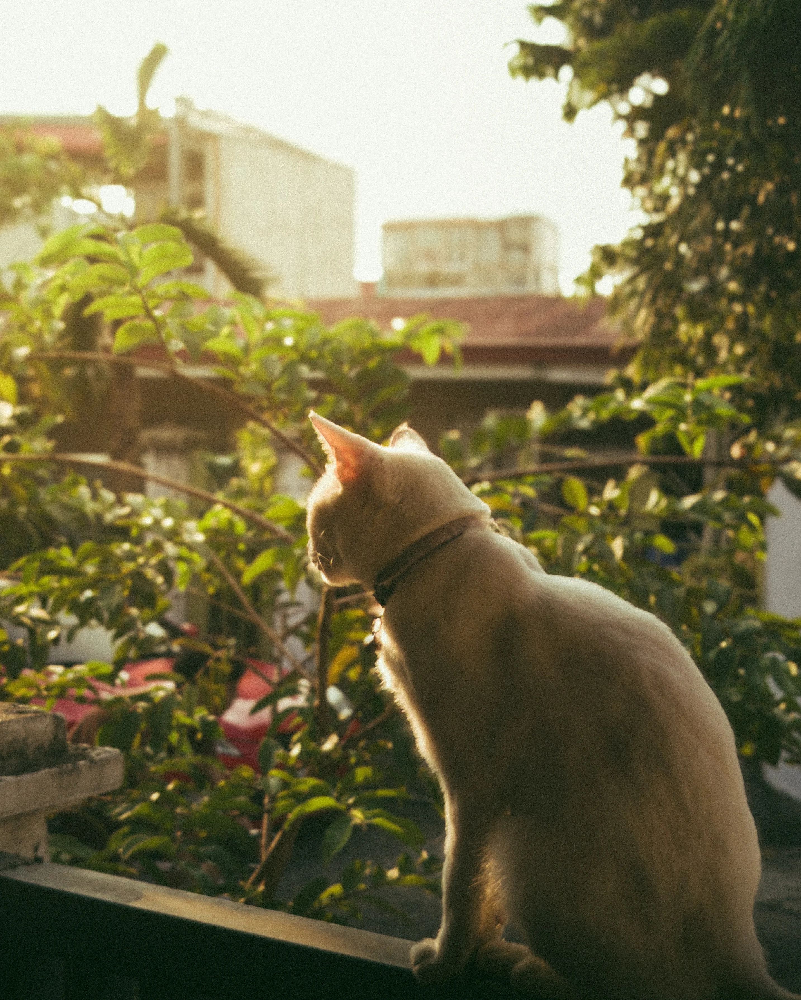
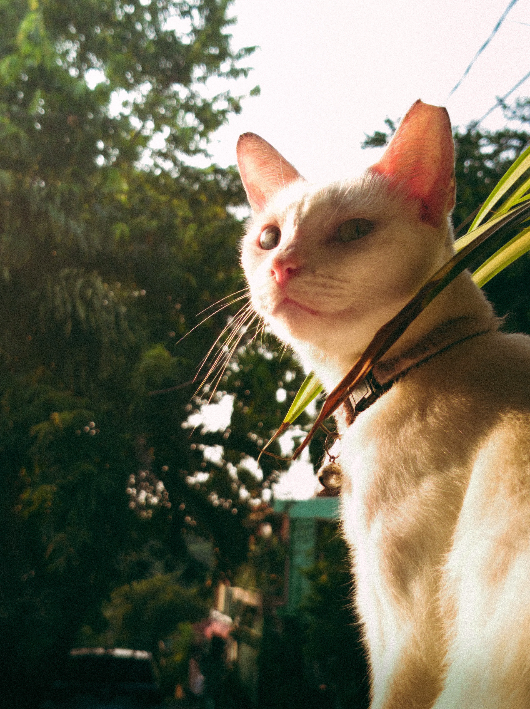
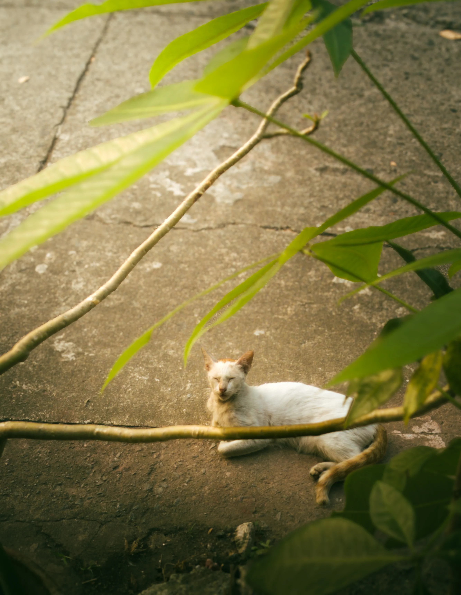

Everything I have shot and edited so far, gathered in one place. Every plate below opens into a drag to compare the raw frame against the finished edit, and each discipline keeps its own page with the full roll.





